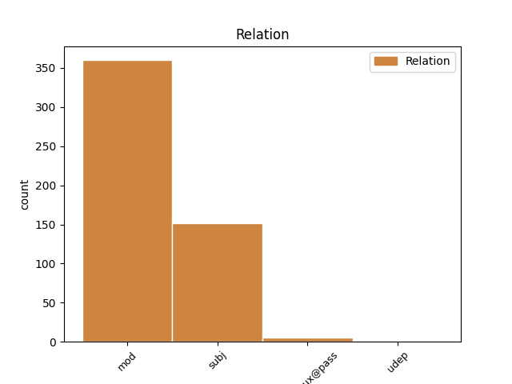
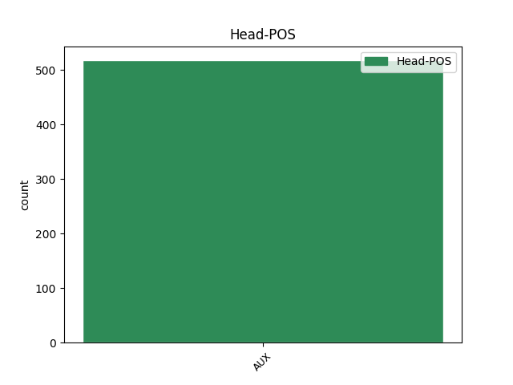
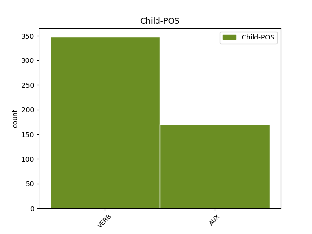

Distribution of features within this leaf



Agreement Rules sorted by frequency.
- When the dependent token is the modifer(mod) of the head token, and the head token is AUX
1 Son ser AUX AUX Mood=Ind|Number=Plur|Person=3|Tense=Pres|VerbForm=Fin 0 _ _ _
2 amigos _ _ _ _ 0 _ _ _
3 , _ _ _ _ 0 _ _ _
4 un _ _ _ _ 0 _ _ _
5 conocimiento _ _ _ _ 0 _ _ _
6 , _ _ _ _ 0 _ _ _
7 aunque _ _ _ _ 0 _ _ _
8 Después _ _ _ _ 0 _ _ _
9 no _ _ _ _ 0 _ _ _
10 hay _ _ _ _ 0 _ _ _
11 quien _ _ _ _ 0 _ _ _
12 pesque _ _ _ _ 0 _ _ _
13 una _ _ _ _ 0 _ _ _
14 sardina _ _ _ _ 0 _ _ _
15 en _ _ _ _ 0 _ _ _
16 sus _ _ _ _ 0 _ _ _
17 aguas _ _ _ _ 0 _ _ _
18 turbias _ _ _ _ 0 _ _ _
19 ni _ _ _ _ 0 _ _ _
20 que _ _ _ _ 0 _ _ _
21 en _ _ _ _ 0 _ _ _
22 el _ _ _ _ 0 _ _ _
23 momento _ _ _ _ 0 _ _ _
24 de _ _ _ _ 0 _ _ _
25 la _ _ _ _ 0 _ _ _
26 verdad _ _ _ _ 0 _ _ _
27 echen _ _ _ _ 0 _ _ _
28 un _ _ _ _ 0 _ _ _
29 cable _ _ _ _ 0 _ _ _
30 en _ _ _ _ 0 _ _ _
31 la _ _ _ _ 0 _ _ _
32 cosa _ _ _ _ 0 _ _ _
33 de _ _ _ _ 0 _ _ _
34 los _ _ _ _ 0 _ _ _
35 fondos _ _ _ _ 0 _ _ _
36 y _ _ _ _ 0 _ _ _
37 las _ _ _ _ 0 _ _ _
38 políticas _ _ _ _ 0 _ _ _
39 regionales _ _ _ _ 0 _ _ _
40 : _ _ _ _ 0 _ _ _
41 el _ _ _ _ 0 _ _ _
42 gazpacho _ _ _ _ 0 _ _ _
43 y _ _ _ _ 0 _ _ _
44 el _ _ _ _ 0 _ _ _
45 Ribera _ _ _ _ 0 _ _ _
46 del _ _ _ _ 0 _ _ _
47 Duero _ _ _ _ 0 _ _ _
48 tienen tener VERB VERB Mood=Ind|Number=Plur|Person=3|Tense=Pres|VerbForm=Fin 1 mod _ _
49 una _ _ _ _ 0 _ _ _
50 virtualidad _ _ _ _ 0 _ _ _
51 limitada _ _ _ _ 0 _ _ _
52 . _ _ _ _ 0 _ _ _
1 Lo _ _ _ _ 0 _ _ _
2 que _ _ _ _ 0 _ _ _
3 FALLARON fallar VERB VERB Mood=Ind|Number=Plur|Person=3|Tense=Past|VerbForm=Fin 4 subj _ _
4 fueron ser AUX AUX Mood=Ind|Number=Plur|Person=3|Tense=Past|VerbForm=Fin 0 _ _ _
5 las _ _ _ _ 0 _ _ _
6 formas _ _ _ _ 0 _ _ _
7 . _ _ _ _ 0 _ _ _
1 En _ _ _ _ 0 _ _ _
2 el _ _ _ _ 0 _ _ _
3 seno _ _ _ _ 0 _ _ _
4 de _ _ _ _ 0 _ _ _
5 la _ _ _ _ 0 _ _ _
6 directiva _ _ _ _ 0 _ _ _
7 barcelonista _ _ _ _ 0 _ _ _
8 se _ _ _ _ 0 _ _ _
9 ha _ _ _ _ 0 _ _ _
10 reemplazado _ _ _ _ 0 _ _ _
11 el _ _ _ _ 0 _ _ _
12 silencio _ _ _ _ 0 _ _ _
13 por _ _ _ _ 0 _ _ _
14 el _ _ _ _ 0 _ _ _
15 diálogo _ _ _ _ 0 _ _ _
16 y _ _ _ _ 0 _ _ _
17 las _ _ _ _ 0 _ _ _
18 apariciones _ _ _ _ 0 _ _ _
19 públicas _ _ _ _ 0 _ _ _
20 , _ _ _ _ 0 _ _ _
21 con _ _ _ _ 0 _ _ _
22 el _ _ _ _ 0 _ _ _
23 propósito _ _ _ _ 0 _ _ _
24 de _ _ _ _ 0 _ _ _
25 no _ _ _ _ 0 _ _ _
26 resquebrajar _ _ _ _ 0 _ _ _
27 aún _ _ _ _ 0 _ _ _
28 más _ _ _ _ 0 _ _ _
29 el _ _ _ _ 0 _ _ _
30 ánimo _ _ _ _ 0 _ _ _
31 del _ _ _ _ 0 _ _ _
32 barcelonismo _ _ _ _ 0 _ _ _
33 , _ _ _ _ 0 _ _ _
34 pero _ _ _ _ 0 _ _ _
35 ello _ _ _ _ 0 _ _ _
36 no _ _ _ _ 0 _ _ _
37 ha _ _ _ _ 0 _ _ _
38 escondido _ _ _ _ 0 _ _ _
39 , _ _ _ _ 0 _ _ _
40 a _ _ _ _ 0 _ _ _
41 tenor _ _ _ _ 0 _ _ _
42 de _ _ _ _ 0 _ _ _
43 las _ _ _ _ 0 _ _ _
44 críticas _ _ _ _ 0 _ _ _
45 que _ _ _ _ 0 _ _ _
46 se _ _ _ _ 0 _ _ _
47 recogen _ _ _ _ 0 _ _ _
48 en _ _ _ _ 0 _ _ _
49 los _ _ _ _ 0 _ _ _
50 medios _ _ _ _ 0 _ _ _
51 , _ _ _ _ 0 _ _ _
52 que _ _ _ _ 0 _ _ _
53 existe _ _ _ _ 0 _ _ _
54 un _ _ _ _ 0 _ _ _
55 manifiesto _ _ _ _ 0 _ _ _
56 desencanto _ _ _ _ 0 _ _ _
57 por _ _ _ _ 0 _ _ _
58 el _ _ _ _ 0 _ _ _
59 futuro _ _ _ _ 0 _ _ _
60 que _ _ _ _ 0 _ _ _
61 pueda poder AUX AUX Mood=Sub|Number=Sing|Person=3|Tense=Pres|VerbForm=Fin 0 _ _ _
62 correr _ _ _ _ 0 _ _ _
63 el _ _ _ _ 0 _ _ _
64 Barcelona _ _ _ _ 0 _ _ _
65 esta _ _ _ _ 0 _ _ _
66 temporada _ _ _ _ 0 _ _ _
67 , _ _ _ _ 0 _ _ _
68 tras _ _ _ _ 0 _ _ _
69 una _ _ _ _ 0 _ _ _
70 planificación _ _ _ _ 0 _ _ _
71 que _ _ _ _ 0 _ _ _
72 no _ _ _ _ 0 _ _ _
73 ha haber AUX AUX Mood=Ind|Number=Sing|Person=3|Tense=Pres|VerbForm=Fin 61 udep _ _
74 sido _ _ _ _ 0 _ _ _
75 del _ _ _ _ 0 _ _ _
76 todo _ _ _ _ 0 _ _ _
77 aplaudida _ _ _ _ 0 _ _ _
78 por _ _ _ _ 0 _ _ _
79 la _ _ _ _ 0 _ _ _
80 masa _ _ _ _ 0 _ _ _
81 social _ _ _ _ 0 _ _ _
82 . _ _ _ _ 0 _ _ _
1 London _ _ _ _ 0 _ _ _
2 Electricity _ _ _ _ 0 _ _ _
3 había _ _ _ _ 0 _ _ _
4 sido ser AUX AUX Gender=Masc|Number=Sing|Tense=Past|VerbForm=Part 0 _ _ _
5 privatizada privatizar VERB VERB Gender=Fem|Number=Sing|Tense=Past|VerbForm=Part 4 comp:aux@pass _ _
6 en _ _ _ _ 0 _ _ _
7 1997 _ _ _ _ 0 _ _ _
8 y _ _ _ _ 0 _ _ _
9 comprada _ _ _ _ 0 _ _ _
10 por _ _ _ _ 0 _ _ _
11 Entergy _ _ _ _ 0 _ _ _
12 Londres _ _ _ _ 0 _ _ _
13 . _ _ _ _ 0 _ _ _
Disagree Examples:
1 La _ _ _ _ 0 _ _ _
2 vicelehendakari _ _ _ _ 0 _ _ _
3 reconoció _ _ _ _ 0 _ _ _
4 que _ _ _ _ 0 _ _ _
5 el _ _ _ _ 0 _ _ _
6 enfrentamiento _ _ _ _ 0 _ _ _
7 entre _ _ _ _ 0 _ _ _
8 nacionalistas _ _ _ _ 0 _ _ _
9 y _ _ _ _ 0 _ _ _
10 populares _ _ _ _ 0 _ _ _
11 está estar AUX AUX Mood=Ind|Number=Sing|Person=3|Tense=Pres|VerbForm=Fin 0 _ _ _
12 afectando _ _ _ _ 0 _ _ _
13 a _ _ _ _ 0 _ _ _
14 las _ _ _ _ 0 _ _ _
15 relaciones _ _ _ _ 0 _ _ _
16 institucionales _ _ _ _ 0 _ _ _
17 entre _ _ _ _ 0 _ _ _
18 los _ _ _ _ 0 _ _ _
19 Gobiernos _ _ _ _ 0 _ _ _
20 vasco _ _ _ _ 0 _ _ _
21 y _ _ _ _ 0 _ _ _
22 central _ _ _ _ 0 _ _ _
23 , _ _ _ _ 0 _ _ _
24 en _ _ _ _ 0 _ _ _
25 las _ _ _ _ 0 _ _ _
26 que _ _ _ _ 0 _ _ _
27 únicamente _ _ _ _ 0 _ _ _
28 " _ _ _ _ 0 _ _ _
29 se _ _ _ _ 0 _ _ _
30 guardan _ _ _ _ 0 _ _ _
31 las _ _ _ _ 0 _ _ _
32 formas _ _ _ _ 0 _ _ _
33 " _ _ _ _ 0 _ _ _
34 , _ _ _ _ 0 _ _ _
35 de _ _ _ _ 0 _ _ _
36 lo _ _ _ _ 0 _ _ _
37 que _ _ _ _ 0 _ _ _
38 responsabilizó responsabilizar VERB VERB Mood=Ind|Number=Sing|Person=3|Tense=Past|VerbForm=Fin 11 mod _ _
39 al _ _ _ _ 0 _ _ _
40 PP _ _ _ _ 0 _ _ _
41 . _ _ _ _ 0 _ _ _
1 Por _ _ _ _ 0 _ _ _
2 su _ _ _ _ 0 _ _ _
3 parte _ _ _ _ 0 _ _ _
4 , _ _ _ _ 0 _ _ _
5 un _ _ _ _ 0 _ _ _
6 grupo _ _ _ _ 0 _ _ _
7 médico _ _ _ _ 0 _ _ _
8 de _ _ _ _ 0 _ _ _
9 la _ _ _ _ 0 _ _ _
10 Cruz _ _ _ _ 0 _ _ _
11 Roja _ _ _ _ 0 _ _ _
12 manifestó _ _ _ _ 0 _ _ _
13 que _ _ _ _ 0 _ _ _
14 lo _ _ _ _ 0 _ _ _
15 que _ _ _ _ 0 _ _ _
16 más _ _ _ _ 0 _ _ _
17 afectaba afectar VERB VERB Mood=Ind|Number=Sing|Person=1|Tense=Imp|VerbForm=Fin 30 subj _ _
18 a _ _ _ _ 0 _ _ _
19 los _ _ _ _ 0 _ _ _
20 cautivos _ _ _ _ 0 _ _ _
21 , _ _ _ _ 0 _ _ _
22 entre _ _ _ _ 0 _ _ _
23 los _ _ _ _ 0 _ _ _
24 que _ _ _ _ 0 _ _ _
25 se _ _ _ _ 0 _ _ _
26 encuentran _ _ _ _ 0 _ _ _
27 cinco _ _ _ _ 0 _ _ _
28 mujeres _ _ _ _ 0 _ _ _
29 , _ _ _ _ 0 _ _ _
30 es ser AUX AUX Mood=Ind|Number=Sing|Person=3|Tense=Pres|VerbForm=Fin 0 _ _ _
31 el _ _ _ _ 0 _ _ _
32 ambiente _ _ _ _ 0 _ _ _
33 deprimente _ _ _ _ 0 _ _ _
34 en _ _ _ _ 0 _ _ _
35 el _ _ _ _ 0 _ _ _
36 que _ _ _ _ 0 _ _ _
37 viven _ _ _ _ 0 _ _ _
38 . _ _ _ _ 0 _ _ _
1 El _ _ _ _ 0 _ _ _
2 número _ _ _ _ 0 _ _ _
3 de _ _ _ _ 0 _ _ _
4 contratos _ _ _ _ 0 _ _ _
5 registrados _ _ _ _ 0 _ _ _
6 durante _ _ _ _ 0 _ _ _
7 el _ _ _ _ 0 _ _ _
8 pasado _ _ _ _ 0 _ _ _
9 mes _ _ _ _ 0 _ _ _
10 de _ _ _ _ 0 _ _ _
11 mayo _ _ _ _ 0 _ _ _
12 fue ser AUX AUX Mood=Ind|Number=Sing|Person=3|Tense=Past|VerbForm=Fin 0 _ _ _
13 de _ _ _ _ 0 _ _ _
14 1.223.112 _ _ _ _ 0 _ _ _
15 , _ _ _ _ 0 _ _ _
16 lo _ _ _ _ 0 _ _ _
17 que _ _ _ _ 0 _ _ _
18 supone suponer VERB VERB Mood=Ind|Number=Sing|Person=3|Tense=Pres|VerbForm=Fin 12 mod _ _
19 un _ _ _ _ 0 _ _ _
20 incremento _ _ _ _ 0 _ _ _
21 de _ _ _ _ 0 _ _ _
22 93.980 _ _ _ _ 0 _ _ _
23 sobre _ _ _ _ 0 _ _ _
24 el _ _ _ _ 0 _ _ _
25 mismo _ _ _ _ 0 _ _ _
26 mes _ _ _ _ 0 _ _ _
27 del _ _ _ _ 0 _ _ _
28 año _ _ _ _ 0 _ _ _
29 anterior _ _ _ _ 0 _ _ _
30 y _ _ _ _ 0 _ _ _
31 , _ _ _ _ 0 _ _ _
32 de _ _ _ _ 0 _ _ _
33 ese _ _ _ _ 0 _ _ _
34 total _ _ _ _ 0 _ _ _
35 , _ _ _ _ 0 _ _ _
36 los _ _ _ _ 0 _ _ _
37 indefinidos _ _ _ _ 0 _ _ _
38 alcanzaron _ _ _ _ 0 _ _ _
39 la _ _ _ _ 0 _ _ _
40 cifra _ _ _ _ 0 _ _ _
41 de _ _ _ _ 0 _ _ _
42 107.256 _ _ _ _ 0 _ _ _
43 , _ _ _ _ 0 _ _ _
44 el _ _ _ _ 0 _ _ _
45 8,77 _ _ _ _ 0 _ _ _
46 por _ _ _ _ 0 _ _ _
47 ciento _ _ _ _ 0 _ _ _
48 de _ _ _ _ 0 _ _ _
49 todos _ _ _ _ 0 _ _ _
50 los _ _ _ _ 0 _ _ _
51 suscritos _ _ _ _ 0 _ _ _
52 por _ _ _ _ 0 _ _ _
53 medio _ _ _ _ 0 _ _ _
54 del _ _ _ _ 0 _ _ _
55 INEM _ _ _ _ 0 _ _ _
56 . _ _ _ _ 0 _ _ _
1 Méndez _ _ _ _ 0 _ _ _
2 , _ _ _ _ 0 _ _ _
3 que _ _ _ _ 0 _ _ _
4 precisó _ _ _ _ 0 _ _ _
5 que _ _ _ _ 0 _ _ _
6 estas _ _ _ _ 0 _ _ _
7 cifras _ _ _ _ 0 _ _ _
8 revelan _ _ _ _ 0 _ _ _
9 una _ _ _ _ 0 _ _ _
10 caída _ _ _ _ 0 _ _ _
11 del _ _ _ _ 0 _ _ _
12 paro _ _ _ _ 0 _ _ _
13 menor _ _ _ _ 0 _ _ _
14 a _ _ _ _ 0 _ _ _
15 la _ _ _ _ 0 _ _ _
16 registrada _ _ _ _ 0 _ _ _
17 en _ _ _ _ 0 _ _ _
18 los _ _ _ _ 0 _ _ _
19 últimos _ _ _ _ 0 _ _ _
20 cinco _ _ _ _ 0 _ _ _
21 años _ _ _ _ 0 _ _ _
22 , _ _ _ _ 0 _ _ _
23 destacó _ _ _ _ 0 _ _ _
24 que _ _ _ _ 0 _ _ _
25 pese _ _ _ _ 0 _ _ _
26 a _ _ _ _ 0 _ _ _
27 que _ _ _ _ 0 _ _ _
28 el _ _ _ _ 0 _ _ _
29 crecimiento _ _ _ _ 0 _ _ _
30 económico _ _ _ _ 0 _ _ _
31 continúa _ _ _ _ 0 _ _ _
32 al _ _ _ _ 0 _ _ _
33 alza _ _ _ _ 0 _ _ _
34 , _ _ _ _ 0 _ _ _
35 la _ _ _ _ 0 _ _ _
36 creación _ _ _ _ 0 _ _ _
37 de _ _ _ _ 0 _ _ _
38 empleo _ _ _ _ 0 _ _ _
39 está estar AUX AUX Mood=Ind|Number=Sing|Person=3|Tense=Pres|VerbForm=Fin 0 _ _ _
40 perdiendo _ _ _ _ 0 _ _ _
41 " _ _ _ _ 0 _ _ _
42 fuelle _ _ _ _ 0 _ _ _
43 " _ _ _ _ 0 _ _ _
44 , _ _ _ _ 0 _ _ _
45 por _ _ _ _ 0 _ _ _
46 lo _ _ _ _ 0 _ _ _
47 que _ _ _ _ 0 _ _ _
48 pidió pedir VERB VERB Mood=Ind|Number=Sing|Person=3|Tense=Past|VerbForm=Fin 39 mod _ _
49 al _ _ _ _ 0 _ _ _
50 Gobierno _ _ _ _ 0 _ _ _
51 la _ _ _ _ 0 _ _ _
52 " _ _ _ _ 0 _ _ _
53 intensificación _ _ _ _ 0 _ _ _
54 " _ _ _ _ 0 _ _ _
55 de _ _ _ _ 0 _ _ _
56 la _ _ _ _ 0 _ _ _
57 creación _ _ _ _ 0 _ _ _
58 de _ _ _ _ 0 _ _ _
59 más _ _ _ _ 0 _ _ _
60 puestos _ _ _ _ 0 _ _ _
61 de _ _ _ _ 0 _ _ _
62 trabajo _ _ _ _ 0 _ _ _
63 . _ _ _ _ 0 _ _ _
1 El _ _ _ _ 0 _ _ _
2 número _ _ _ _ 0 _ _ _
3 de _ _ _ _ 0 _ _ _
4 contratos _ _ _ _ 0 _ _ _
5 registrados _ _ _ _ 0 _ _ _
6 durante _ _ _ _ 0 _ _ _
7 mayo _ _ _ _ 0 _ _ _
8 fue ser AUX AUX Mood=Ind|Number=Sing|Person=3|Tense=Past|VerbForm=Fin 0 _ _ _
9 de _ _ _ _ 0 _ _ _
10 1.223.112 _ _ _ _ 0 _ _ _
11 , _ _ _ _ 0 _ _ _
12 lo _ _ _ _ 0 _ _ _
13 que _ _ _ _ 0 _ _ _
14 supone suponer VERB VERB Mood=Ind|Number=Sing|Person=3|Tense=Pres|VerbForm=Fin 8 mod _ _
15 un _ _ _ _ 0 _ _ _
16 incremento _ _ _ _ 0 _ _ _
17 de _ _ _ _ 0 _ _ _
18 93.980 _ _ _ _ 0 _ _ _
19 sobre _ _ _ _ 0 _ _ _
20 el _ _ _ _ 0 _ _ _
21 mismo _ _ _ _ 0 _ _ _
22 mes _ _ _ _ 0 _ _ _
23 del _ _ _ _ 0 _ _ _
24 año _ _ _ _ 0 _ _ _
25 anterior _ _ _ _ 0 _ _ _
26 , _ _ _ _ 0 _ _ _
27 y _ _ _ _ 0 _ _ _
28 de _ _ _ _ 0 _ _ _
29 ese _ _ _ _ 0 _ _ _
30 total _ _ _ _ 0 _ _ _
31 los _ _ _ _ 0 _ _ _
32 indefinidos _ _ _ _ 0 _ _ _
33 alcanzaron _ _ _ _ 0 _ _ _
34 la _ _ _ _ 0 _ _ _
35 cifra _ _ _ _ 0 _ _ _
36 de _ _ _ _ 0 _ _ _
37 107.256 _ _ _ _ 0 _ _ _
38 , _ _ _ _ 0 _ _ _
39 el _ _ _ _ 0 _ _ _
40 8,77 _ _ _ _ 0 _ _ _
41 por _ _ _ _ 0 _ _ _
42 ciento _ _ _ _ 0 _ _ _
43 de _ _ _ _ 0 _ _ _
44 todos _ _ _ _ 0 _ _ _
45 los _ _ _ _ 0 _ _ _
46 suscritos _ _ _ _ 0 _ _ _
47 por _ _ _ _ 0 _ _ _
48 medio _ _ _ _ 0 _ _ _
49 del _ _ _ _ 0 _ _ _
50 INEM _ _ _ _ 0 _ _ _
51 . _ _ _ _ 0 _ _ _